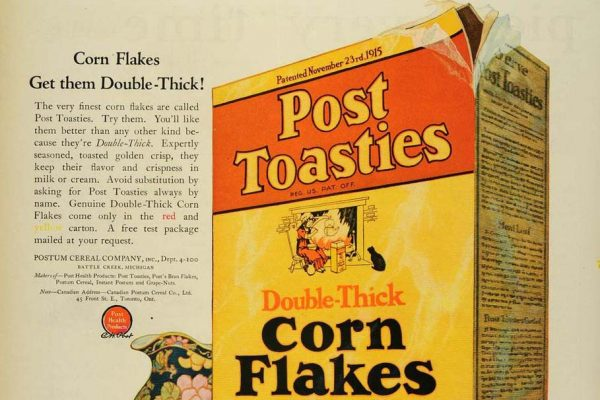
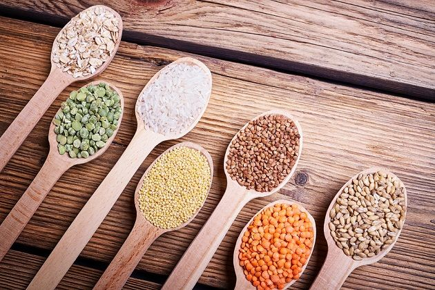
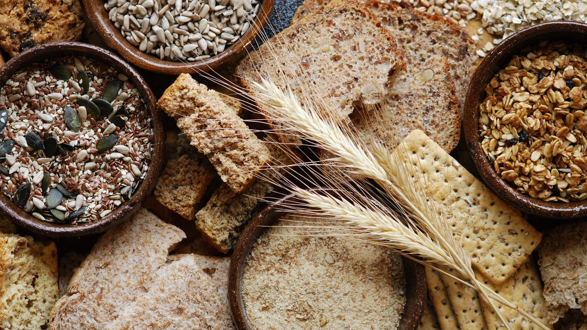

El cereal con leche es el rey a la hora del desayuno, es un platillo fácil y rápido de preparar, lleno de sabor y que además nos brinda energía y proteínas para las actividades que realizamos en nuestro día a día, pero como fue exactamente que nació este tipo de alimento y desde cuándo es consumido como uno de los desayunos más populares al rededor de todo el mundo. El cereal como desayuno es la forma en la que se le conoce a múltiples productos derivados de cereales como maíz, avena o arroz, que se venden empaquetados y que se consumen comúnmente como un platillo frío servido con leche, yogurt, frutas o incluso agua, en la mayoría de los casos suelen estar saborizados con azúcar, chocolate o saborizantes artificiales. El primer cereal de este tipo se llamo Granula y fue inventado por James Caleb Jackson en 19863 en Nueva York, aunque no tuvo mucho éxito ya que los cereales debían ser remojados desde una noche antes para poder consumirse por la mañana. Después de este intento, fue trabajo de John Harvey Kellogg inventar en 1877 una especie de bizcocho hecho de avena, trigo y harina de maíz como paliativo para personas que sufrían de problemas de intestinales.

Diferentes Cereales
Los cereales más utilizados en la alimentación humana son el trigo, el arroz y luego el maíz. La cebada se utiliza fundalmentalmente en la fabricación de la cerveza para hacer la malta aunque también se puede utilizar en refrescos naturales.
Los cereales con gluten, especialmente el trigo, se emplean principalmente para elaborar panes y pastas. El gluten es muy apreciado por sus cualidades viscoelásticas únicas, que aportan elasticidad a la masa de harina, lo que permite que junto con la fermentación el pan obtenga volumen, así como la consistencia elástica y esponjosa de los panes y masas horneadas.2324 Estas características físicas del gluten facilitan la producción de numerosos alimentos procesados, comida rápida y aditivos alimentarios,25 cuyo consumo se ha incrementado espectacularmente debido al proceso de industrialización global y a la occidentalización de la dieta.26 Como aditivo, se emplea para conferir viscosidad, espesor o volumen a una gran cantidad de productos alimenticios, lo que provoca que exista presencia de proteínas tóxicas para una parte de la población en los productos menos sospechosos.27 Más de la mitad de los alimentos que se comercializan actualmente contiene gluten de trigo, cebada, centeno o avena como espesante o aglutinante, en forma de contaminación cruzada o incluso por adulteración.27

El cereal con leche se debe de preparar con 2 ingredientes. Primero se agrega cereal y luego leche, es opcional agregar cualquier otro tipo de ingredietne. Se comen al gusto ya sea crujientes o esperar a que se remojen.
Los cereales son por lo general bajos en grasa y aporto una alta densidad de nutrientes. Además ayudan a la ingesta de alimentos en al desayuno ya que niños y adultos disfrutan de las distintas variedades, sabores y texturas, así como la practicidad y comodidad que brindan los cereales del desayuno.
ha observado en distintos países de Europa que los adolescentes que toman cereales de desayuno suelen tener ingestas superiores de vitaminas del complejo B, calcio, y vitamina D.1
Un análisis reciente de 51 estudios de todo el mundo que examinaban la contribución de los cereales de desayuno a las ingestas de nutrientes, concluyó que los niños, adolescentes y adultos que suelen desayunar cereales ingieren más fibra, vitaminas A y D, tiamina, riboflavina, niacina, piridoxina, folato, calcio, hierro, magnesio y zinc.2
Ademas se ha observado que aquellos que desayunan cereales tienen menos probabilidades de que sus ingestas de vitaminas y minerales estén por debajo de las cantidades diarias recomendadas, incluidas las de tiamina, riboflavina, niacina, folato, vitamina C, calcio, magnesio, hierro, zinc y fibra que aquellos que no toman cereales de desayuno.2
En la mayoría de las ocasiones los cereales se consumen con leche, favoreciendo el consumo de este alimento tan importante para una alimentación variada y equilibrada. Al consumir los cereales con leche se ayuda a aumentar el aporte de calcio en la dieta, además de proporcionar otros nutrientes entre los que se incluyen, hidratos de carbono, vitaminas y proteínas.

Como yo prerparo mis cereales favoritos Este video explica como preparar cereal
 Historia del cereal
Historia del cereal